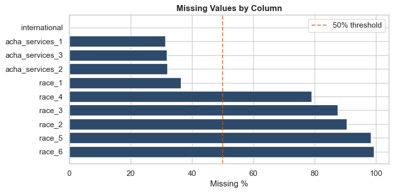
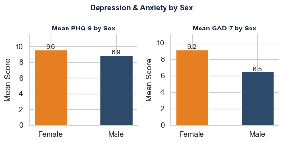
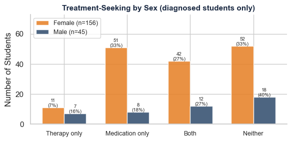

Social Media and Mental Health (Braghieri et al., 2022)
This report analyses a clinically validated survey dataset of US college students using PHQ-9 (depression) and GAD-7 (anxiety) screening instruments.
Dataset: Social Media and Mental Health Source: Braghieri, Levy & Makarin (2022) via ICPSR Records: 579 students across 48 US states Variables: 118 columns including PHQ-9, GAD-7, ACHA health indicators, and demographic variables
1. Data Loading & Quality Checks
Code
import pandas as pdimport numpy as npimport matplotlib.pyplot as pltimport seaborn as snsfrom functools importreducepd.set_option('display.max_columns', 20)pd.set_option('display.width', 1000)sns.set_theme(style="whitegrid")plt.rcParams['figure.figsize'] = (10, 5)print("Libraries loaded successfully")
Libraries loaded successfully
Table styling functions loaded ✓
Code
# Load the real datasetdf = pd.read_csv('data/mental_health2425v8in.csv')print(f"Dataset loaded: {df.shape[0]} rows × {df.shape[1]} columns")print()# Show first 3 rows — only key readable columnspreview_cols = ['year_1', 'state_1', 'general_health', 'sex', 'fulltime', 'international', 'phq9_COMP', 'gad7_COMP']preview = df[preview_cols].head(3).copy()preview.columns = ['Birth Year', 'State', 'General Health', 'Sex', 'Full Time', 'International', 'PHQ-9 Score', 'GAD-7 Score']display_with_header(style_table(preview), "Dataset Preview — First 3 Rows (key columns)")
Dataset loaded: 579 rows × 118 columns
Dataset Preview — First 3 Rows (key columns)
Birth Year
State
General Health
Sex
Full Time
International
PHQ-9 Score
GAD-7 Score
0
2000
MD
Very Good
Female
Yes
No
6
0
1
2001
SC
Good
Female
Yes
No
19
4
2
1999
NJ
Good
Female
Yes
No
10
9
2. Dataset Overview
Before any cleaning is applied, the dataset is inspected to understand its structure, identify data quality issues, and determine what preprocessing will be required.
Dataset: 579 rows × 118 columns
Total columns with missing values: 10
Total missing values: 3396
Missing Values by Column
Missing Count
Missing %
race_6
575
99.31
race_5
570
98.45
race_2
524
90.50
race_3
507
87.56
race_4
458
79.10
race_1
211
36.44
acha_services_2
185
31.95
acha_services_3
184
31.78
acha_services_1
181
31.26
international
1
0.17

Code
# Column types summarytype_summary = pd.DataFrame({'Data Type': df.dtypes,'Non-Null Count': df.notnull().sum(),'Null Count': df.isnull().sum(),'Null %': (df.isnull().sum() /len(df) *100).round(2)})print(f"Dataset: {df.shape[0]} rows × {df.shape[1]} columns")print()print("Data type breakdown:")print(df.dtypes.value_counts().to_string())print()# Only show rows with missing valuesmissing_only = type_summary[type_summary['Null Count'] >0].sort_values('Null %', ascending=False)display_with_header( style_table(missing_only).format({'Non-Null Count': '{:.0f}','Null Count': '{:.0f}','Null %': '{:.2f}' }),"Columns with Missing Values — Data Type & Null Summary")
Dataset: 579 rows × 118 columns
Data type breakdown:
object 69
int64 49
Columns with Missing Values — Data Type & Null Summary
Data Type
Non-Null Count
Null Count
Null %
race_6
object
4
575
99.31
race_5
object
9
570
98.45
race_2
object
55
524
90.50
race_3
object
72
507
87.56
race_4
object
121
458
79.10
race_1
object
368
211
36.44
acha_services_2
object
394
185
31.95
acha_services_3
object
395
184
31.78
acha_services_1
object
398
181
31.26
international
object
578
1
0.17
2.3 Interpreting the Missing Values
The table above reveals that not all missing values have the same cause. Two distinct patterns are identified:
Pattern 1 — Structural skip pattern (acha_services_1/2/3)
These columns ask whether a student was diagnosed, is in therapy, or is on medication — but only if they answered Yes to having depression (acha_depression). Students who answered No were never asked these questions. Their NaN values are not missing data — they are legitimately not applicable. Standard imputation would introduce false information here.
Pattern 2 — Multi-select wide format (race_1 to race_6)
Students selected all racial identities that applied. Each race_N column contains the label if selected, or NaN if not. A NaN here means “did not select this option” — not “did not answer”. These columns require restructuring,
2.4 What We Will Fix
Based on the inspection above, the following issues are addressed in the preprocessing pipeline:
2.3 What We Will Fix — Preprocessing Plan
Issue
Column(s)
Action
0
Rogue whitespace in column name
phq9_6 NUM
Strip whitespace from all column names
1
Skip-pattern NaNs
acha_services_1/2/3
Flag as 'not_applicable' — not true missing data
2
Wide-format race columns
race_1 to race_6
Restructure into single 'race' column
3
Age not directly available
year_1 (birth year)
Derive age column (2022 − birth year)
4
Missing value imputation
acha_services_1/2/3
Compare mode vs probability vs domain-informed
3. Data Preprocessing & Sorting
All preprocessing is applied to df_clean — the working copy created before this section. The original dataset df remains unmodified throughout.
Code
# Create working copy in memory — original df remains untoucheddf_clean = df.copy()df_clean.columns = df_clean.columns.str.strip()# Save original to disk as permanent backupimport osos.makedirs('data/processed', exist_ok=True)df.to_csv('data/processed/mental_health_ORIGINAL_BACKUP.csv', index=False)print(f"Working copy created: {df_clean.shape[0]} rows × {df_clean.shape[1]} columns")print(f"Original dataset preserved: {df.shape[0]} rows × {df.shape[1]} columns")print(f"Are they the same object in memory? {df is df_clean}")print(f"Original also saved to: data/processed/mental_health_ORIGINAL_BACKUP.csv")
Working copy created: 579 rows × 118 columns
Original dataset preserved: 579 rows × 118 columns
Are they the same object in memory? False
Original also saved to: data/processed/mental_health_ORIGINAL_BACKUP.csv
3.1 Fixing Column Name Error
During dataset inspection, two issues were identified in column naming:
Rogue whitespace — the column phq9_6 NUM contains a space before NUM, which would cause KeyError failures in any downstream analysis referencing this column by name.
Inconsistent naming convention — all other PHQ-9 numeric columns follow the pattern phq9_XNUM (no space), making phq9_6 NUM an outlier that breaks programmatic column selection.
Both issues are resolved by: - Stripping all leading/trailing whitespace from all column names - Explicitly renaming phq9_6 NUM → phq9_6NUM to match the consistent naming convention of all other PHQ-9 item columns
Code
# Check for rogue spaces before fixproblem_cols = [col for col in df_clean.columns if' 'in col]print(f"Columns with spaces in name (before fix): {problem_cols}")# Fix: strip all column name whitespacedf_clean.columns = df_clean.columns.str.strip()# Explicitly rename the stubborn onedf_clean = df_clean.rename(columns={'phq9_6 NUM': 'phq9_6NUM'})# Verifyproblem_cols_after = [col for col in df_clean.columns if' 'in col]print(f"Columns with spaces in name (after fix): {problem_cols_after}")print()print("✓ All column names cleaned successfully")
Columns with spaces in name (before fix): ['phq9_6 NUM']
Columns with spaces in name (after fix): []
✓ All column names cleaned successfully
3.2 Handling Skip-Pattern Missing Values
Not all missing values represent absent data. In this dataset, columns acha_services_1 (Diagnosed in last 12 months), acha_services_2 (Currently in therapy), and acha_services_3 (Currently on medication) follow a skip pattern: they were only presented to students who answered Yes to having been diagnosed with depression (acha_depression). Students who answered No were never asked these questions; therefore, their NaN values are legitimately not applicable, not missing.
Three approaches are compared: - Mode imputation: fills NaN with the most frequent value - Probability-based imputation: fills NaN proportionally to the observed distribution - Domain-informed flagging: replaces NaN with not_applicable where acha_depression == 'No'
Standard imputation (modes 1 and 2) would introduce false information by treating skipped questions as unanswered ones. The domain-informed approach is the analytically correct method for this data structure.
Code
# Column labels for readabilityservice_labels = {'acha_services_1': 'Diagnosed in last 12 months (acha_services_1)','acha_services_2': 'Currently in therapy (acha_services_2)','acha_services_3': 'Currently on medication (acha_services_3)'}# First — understand the skip patterntotal =len(df_clean)depression_no = (df_clean['acha_depression'] =='No').sum()depression_yes = (df_clean['acha_depression'] =='Yes').sum()depression_null = df_clean['acha_depression'].isnull().sum()print(f"Total records: {total}")print(f"acha_depression = No: {depression_no} ({depression_no/total*100:.1f}%)")print(f"acha_depression = Yes: {depression_yes} ({depression_yes/total*100:.1f}%)")print(f"acha_depression = NaN: {depression_null}")print()from IPython.display import display, HTMLfor col, label in service_labels.items(): null_count = df_clean[col].isnull().sum() null_where_no = df_clean[ (df_clean['acha_depression'] =='No') & (df_clean[col].isnull()) ].shape[0] null_where_yes = df_clean[ (df_clean['acha_depression'] =='Yes') & (df_clean[col].isnull()) ].shape[0] display(HTML(f"<b>{label}</b>"))print(f" Total NaN: {null_count}")print(f" NaN where depression=No: {null_where_no} (skip pattern)")print(f" NaN where depression=Yes: {null_where_yes} (genuine missing)")print()
Total NaN: 181
NaN where depression=No: 181 (skip pattern)
NaN where depression=Yes: 0 (genuine missing)
Currently in therapy (acha_services_2)
Total NaN: 185
NaN where depression=No: 185 (skip pattern)
NaN where depression=Yes: 0 (genuine missing)
Currently on medication (acha_services_3)
Total NaN: 184
NaN where depression=No: 184 (skip pattern)
NaN where depression=Yes: 0 (genuine missing)
No imputation was required. All NaN values were structurally explained by the survey skip pattern and replaced with ‘not_applicable’ to preserve data integrity.
Code
service_labels = {'acha_services_1': 'Diagnosed in last 12 months','acha_services_2': 'Currently in therapy','acha_services_3': 'Currently on medication'}# Restore clean copy first — undo the incorrect fix#df_clean = df.copy()#df_clean.columns = df_clean.columns.str.strip()# Correct fix — only replace NaN where depression == 'No'for col in service_labels.keys(): mask = (df_clean['acha_depression'] =='No') & (df_clean[col].isnull()) df_clean.loc[mask, col] ='not_applicable'# Summary tablerows = []for col, label in service_labels.items(): vc = df_clean[col].value_counts() rows.append({'Column': f"{label} ({col})",'Yes': vc.get('Yes', 0),'No': vc.get('No', 0),'not_applicable': vc.get('not_applicable', 0),'NaN remaining': df_clean[col].isnull().sum(),'Total': len(df_clean) })summary = pd.DataFrame(rows).set_index('Column')display_with_header( style_table(summary).format({'Yes': '{:.0f}','No': '{:.0f}','not_applicable': '{:.0f}','NaN remaining': '{:.0f}','Total': '{:.0f}' }),"Skip-Pattern Fix Summary")
Skip-Pattern Fix Summary
Yes
No
not_applicable
NaN remaining
Total
Column
Diagnosed in last 12 months (acha_services_1)
62
336
181
0
579
Currently in therapy (acha_services_2)
83
311
185
0
579
Currently on medication (acha_services_3)
122
273
184
0
579
3.3 Restructuring Race Columns (Wide → Long Format)
The dataset stores racial identity as six separate columns
(race_1 to race_6), each representing
one category in a select-all-that-apply question. A value indicates
the student selected that option; NaN indicates they did not.
This approach preserves multi-select responses while making the
column analytically usable for grouping and visualisation.
Before — Wide Format (one column per category)
Student
race_1
race_2
race_3
race_4
race_5
race_6
A
White-not Hispanic
NaN
NaN
NaN
NaN
NaN
B
NaN
Black-not Hispanic
NaN
NaN
NaN
NaN
C
White-not Hispanic
NaN
Hispanic or Latino
NaN
NaN
NaN
After — Single Race Column
Student
Race
A
White-not Hispanic
B
Black-not Hispanic
C
White-not Hispanic, Hispanic or Latino
Code
race_cols = ['race_1', 'race_2', 'race_3', 'race_4', 'race_5', 'race_6']# Restructure — combine non-NaN values into single comma-separated stringdf_clean['race'] = df_clean[race_cols].apply(lambda row: ', '.join(row.dropna().values), axis=1)# Replace empty string with 'Not stated'df_clean['race'] = df_clean['race'].replace('', 'Not stated')# Drop original wide columnsdf_clean = df_clean.drop(columns=race_cols)# Simplify multi-select into 'Multiple' for cleaner displaydef simplify_race(val):if','instr(val):return'Multiple'return valdf_clean['race_simplified'] = df_clean['race'].apply(simplify_race)# Summary distribution tablerace_summary = df_clean['race_simplified'].value_counts().reset_index()race_summary.columns = ['Race', 'Count']race_summary['%'] = (race_summary['Count'] /len(df_clean) *100).round(1)display_with_header( style_table(race_summary).hide(axis='index').format({'Count': '{:.0f}','%': '{:.1f}' }),"Race Distribution After Restructuring")
Race Distribution After Restructuring
Race
Count
%
White - not Hispanic (includes Middle Eastern)
327
56.5
Asian or Pacific Islander
103
17.8
Hispanic or Latino
61
10.5
Multiple
45
7.8
Black - not Hispanic
40
6.9
Other
3
0.5
3.4 Deriving Age from Birth Year
The dataset does not contain an age column directly. Instead, year_1 records each student’s birth year (range: 1971–2003). Age is derived by subtracting the birth year from the survey year (2022).
Before:year_1 = 1995 → After:age = 27
This derived variable is essential for demographic analysis and age-group comparisons in the visualisation section.
Code
from IPython.display import display, HTMLimport re# Derive agedf_clean['age'] =2022- df_clean['year_1']# Style functiondef style_table(df):return df.style.set_table_styles([ {'selector': 'thead th', 'props': [('background-color', '#192841'), ('color', 'white'), ('font-weight', 'bold'), ('padding', '8px'), ('text-align', 'center')]}, {'selector': 'tbody td', 'props': [('padding', '6px'), ('text-align', 'center')]}, {'selector': 'tbody tr:nth-child(even)', 'props': [('background-color', '#EAF0F7')]}, ])def display_with_header(styled_df, title):# Force table to 100% width html = styled_df.to_html() html = re.sub(r'<table', '<table style="width:100%; border-collapse:collapse;"', html) display(HTML(f""" <div style="width:50%; margin:20px auto 0px auto;"> <div style="background-color:#2E4A6B; color:white; padding:8px 12px; font-weight:bold; font-size:1em;">{title} </div>{html} </div> """))# --- Before & After ---before_after = df_clean[['year_1', 'age']].head(5).copy()before_after.columns = ['Birth Year (before)', 'Derived Age (after)']before_after.index = [f"Student {i+1}"for i inrange(5)]display_with_header(style_table(before_after),"Before & After — Birth Year to Derived Age")# --- Age Summary Stats ---stats = df_clean['age'].describe().round(1).to_frame().Tstats.index = ['Age']display_with_header(style_table(stats).format("{:.1f}"),"Age Summary Statistics")# --- Age Group Distribution ---df_clean['age_group'] = pd.cut( df_clean['age'], bins=[18, 21, 24, 27, 30, 60], labels=['19-21', '22-24', '25-27', '28-30', '30+'])age_summary = df_clean['age_group'].value_counts().sort_index().reset_index()age_summary.columns = ['Age Group', 'Count']age_summary['%'] = (age_summary['Count'] /len(df_clean) *100).round(1)display_with_header( style_table(age_summary).format({'Count': '{:.0f}', '%': '{:.1f}'}),"Age Group Distribution")
Before & After — Birth Year to Derived Age
Birth Year (before)
Derived Age (after)
Student 1
2000
22
Student 2
2001
21
Student 3
1999
23
Student 4
1998
24
Student 5
2000
22
Age Summary Statistics
count
mean
std
min
25%
50%
75%
max
Age
579.0
23.6
5.4
19.0
21.0
22.0
24.0
51.0
Age Group Distribution
Age Group
Count
%
0
19-21
239
41.3
1
22-24
217
37.5
2
25-27
39
6.7
3
28-30
18
3.1
4
30+
66
11.4
3.5 Sorting Algorithm — Merge Sort on PHQ-9 Score
To demonstrate algorithmic thinking, a merge sort algorithm is applied to order students by their PHQ-9 composite depression score (phq9_COMP).
Merge sort was selected for its efficiency and divide-and-conquer approach — it splits the dataset recursively, sorts each half, then merges them back in order. Unlike Python’s built-in sort(), implementing merge sort explicitly demonstrates understanding of algorithmic complexity (O(n log n)).
Students diagnosed with depression (34.7%) have a mean PHQ-9 of 9.7 and mean GAD-7 of 10.2 — sitting at the moderate threshold for both depression and anxiety.
Students not diagnosed (65.3%) have a mean PHQ-9 of 9.2 and mean GAD-7 of 7.3 — only marginally lower on depression, but notably lower on anxiety.
The difference in PHQ-9 between the two groups is just 0.5 points — clinically negligible. This suggests that a significant proportion of students without a formal depression diagnosis are experiencing symptom levels comparable to those who have been diagnosed.
This points to a likely underdiagnosis problem — students are experiencing moderate depression symptoms without having sought or received a formal diagnosis. The anxiety gap (10.2 vs 7.3) is more pronounced, suggesting that anxiety may be a stronger differentiator between diagnosed and undiagnosed students than depression severity alone.
💡 This finding will be revisited in the conclusions section.
3.6 Missing Value Imputation: Method Comparison
During dataset inspection, acha_services_1(diagnosed in last 12 months), acha_services_2(currently in therapy), and acha_services_3(currently on medication) appeared to have ~31% missing values each.
A less careful analyst might have applied standard imputation immediately. This section demonstrates what would have happened: and why it would have been analytically wrong.
By identifying the skip pattern in Section 3.2: that these questions were only asked to students who answered Yes to having depression — we avoided introducing false data into the dataset.
The three methods below are compared against the original distribution to show how each one distorts the data differently:
Method
What it does
Problem
Mode imputation
Fills all NaN with No (most frequent answer)
Inflates No responses: treats skipped questions as answered
Probability-based
Fills NaN proportionally to Yes/No distribution
Still treats skipped questions as answered: just more subtly
Domain-informed ✅
Flags NaN as not_applicable where acha_depression = No
Correctly reflects survey structure: no false data introduced
💡 The correct approach is not always the most obvious one. Understanding why data is missing is more important than simply filling it in.
Imputation Comparison — Diagnosed in last 12 months (acha_services_1)
Value
Original (non-NaN)
Mode Imputation
Probability-Based
Domain-Informed ✓
Yes
15.6%
10.7%
10.7%
10.7%
No
84.4%
58.0%
58.0%
58.0%
not_applicable
—
—
—
31.3%
NaN remaining
181 values
0
0
0
✓ Method chosen?
—
❌ No
❌ No
✅ Yes — correctly reflects skip pattern
Imputation Comparison — Currently in therapy (acha_services_2)
Value
Original (non-NaN)
Mode Imputation
Probability-Based
Domain-Informed ✓
Yes
21.1%
14.3%
14.3%
14.3%
No
78.9%
53.7%
53.7%
53.7%
not_applicable
—
—
—
32.0%
NaN remaining
185 values
0
0
0
✓ Method chosen?
—
❌ No
❌ No
✅ Yes — correctly reflects skip pattern
Imputation Comparison — Currently on medication (acha_services_3)
Value
Original (non-NaN)
Mode Imputation
Probability-Based
Domain-Informed ✓
Yes
30.9%
21.1%
21.1%
21.1%
No
69.1%
47.2%
47.2%
47.2%
not_applicable
—
—
—
31.8%
NaN remaining
184 values
0
0
0
✓ Method chosen?
—
❌ No
❌ No
✅ Yes — correctly reflects skip pattern
3.7 Outlier Detection Using IQR
Outliers are identified using the Interquartile Range (IQR) method across the key numeric variables. The IQR is the range between the 25th and 75th percentiles: values beyond 1.5 × IQR above or below this range are flagged as outliers.
Outliers are retained in the dataset as they likely represent genuine extreme cases rather than data entry errors: a student scoring 27 on PHQ-9 is a real clinical presentation, not a mistake.
The IQR method identified 3 outliers in PHQ-9 (scores above 26.5) and 0 outliers in GAD-7.
In this dataset, outliers are retained for the following reasons:
Reason
Explanation
Clinical validity
A PHQ-9 score of 27 is the maximum possible: it represents a real student experiencing severe depression, not a data entry error
Instrument design
PHQ-9 and GAD-7 are bounded scales (0–27 and 0–21): extreme scores are expected and meaningful
Research integrity
Removing high scorers would systematically bias results toward underestimating depression severity
Small number
Only 3 outliers in 579 records (0.5%): insufficient to distort analysis
Removing outliers from clinical mental health data risks silencing the most vulnerable individuals in the dataset: the opposite of what good research should do.
3.8 Converting Frequency Columns to Numeric
The acha_12months_times columns record how often students experienced specific mental health events in the past 12 months. Values are stored as text frequency labels rather than numbers, making them unusable for correlation analysis or any numeric computation.
A frequency mapping is applied to convert these to ordinal numeric values (required for further data visualisation):
Text Value
Numeric
Never
0
1-2 times
1
3-4 times
2
5-6 times
3
7-8 times
4
9-10 times
5
11 or more times
6
Code
# Frequency mappingfreq_map = {'Never': 0,'1-2 times': 1,'3-4 times': 2,'5-6 times': 3,'7-8 times': 4,'9-10 times': 5,'11 or more times': 6}# Identify all acha_12months_times columnstime_cols = [col for col in df_clean.columns if'acha_12months_times'in col]# Show beforebefore = df_clean[time_cols[:3]].head(3).copy()before.index = [f"Student {i+1}"for i inrange(3)]display_with_header( style_table(before).hide(axis='index'),f"Before — Text Frequency Values (showing 3 of {len(time_cols)} columns)")# Apply mappingfor col in time_cols: df_clean[col] = df_clean[col].map(freq_map)# Show afterafter = df_clean[time_cols[:3]].head(3).copy()after.index = [f"Student {i+1}"for i inrange(3)]display_with_header( style_table(after).hide(axis='index').format('{:.0f}'),f"After — Converted to Numeric (showing 3 of {len(time_cols)} columns)")# Mapping reference table with coloursmapping_df = pd.DataFrame({'Text Value (before)': list(freq_map.keys()),'Numeric (after)': list(freq_map.values()),'Severity': ['None', 'Very Low', 'Low', 'Moderate','High', 'Very High', 'Extreme']})def color_numeric(val): colors_map = {0: 'background-color: #27AE60; color: white',1: 'background-color: #82B366; color: white',2: 'background-color: #82B366; color: white',3: 'background-color: #F39C12; color: white',4: 'background-color: #E67E22; color: white',5: 'background-color: #E74C3C; color: white',6: 'background-color: #C0392B; color: white' }return colors_map.get(val, '')def color_text(val): text_colors = {'Never': 'background-color: #27AE60; color: white','1-2 times': 'background-color: #82B366; color: white','3-4 times': 'background-color: #82B366; color: white','5-6 times': 'background-color: #F39C12; color: white','7-8 times': 'background-color: #E67E22; color: white','9-10 times': 'background-color: #E74C3C; color: white','11 or more times': 'background-color: #C0392B; color: white' }return text_colors.get(val, '')styled_mapping = mapping_df.style.set_table_styles([ {'selector': 'thead th','props': [('background-color', '#192841'), ('color', 'white'), ('font-weight', 'bold'), ('padding', '8px'), ('text-align', 'center')]}, {'selector': 'tbody td','props': [('padding', '6px'), ('text-align', 'center')]}]).hide(axis='index')\ .map(color_text, subset=['Text Value (before)'])\ .map(color_numeric, subset=['Numeric (after)'])import rehtml = styled_mapping.to_html()html = re.sub(r'<table','<table style="width:100%; border-collapse:collapse;"', html)display(HTML(f""" <div style="width:50%; margin:20px auto 0px auto;"> <div style="background-color:#2E4A6B; color:white; padding:8px 12px; font-weight:bold; font-size:1em;"> Frequency Mapping — Text to Numeric </div>{html} </div>"""))print(f"Total columns converted: {len(time_cols)} ✓")
Before — Text Frequency Values (showing 3 of 7 columns)
acha_12months_times_1
acha_12months_times_2
acha_12months_times_3
Never
11 or more times
5-6 times
1-2 times
5-6 times
7-8 times
7-8 times
11 or more times
11 or more times
After — Converted to Numeric (showing 3 of 7 columns)
acha_12months_times_1
acha_12months_times_2
acha_12months_times_3
0
6
3
1
3
4
4
6
6
Frequency Mapping — Text to Numeric
Text Value (before)
Numeric (after)
Severity
Never
0
None
1-2 times
1
Very Low
3-4 times
2
Low
5-6 times
3
Moderate
7-8 times
4
High
9-10 times
5
Very High
11 or more times
6
Extreme
Total columns converted: 7 ✓
4. Functional Programming
Functional programming techniques: map(), filter(), and reduce() are applied to transform, refine, and aggregate the dataset.
These approaches support efficient data processing and demonstrate understanding of functional programming concepts in data analysis. Each technique is applied to clinically meaningful variables, producing results that directly inform the analysis in Section 5.
Function
Purpose
Applied To
map()
Transform each element
PHQ-9 and GAD-7 scores → severity categories
filter()
Select elements meeting a condition
Student subgroups by clinical severity
reduce()
Aggregate elements into a single result
Total and mean depression/anxiety scores
4.1 Data Transformation Using map()
map() applies a function to every element in a sequence efficiently and without explicit loops. Here it is used to translate raw PHQ-9 and GAD-7 numeric scores into clinically meaningful severity categories: making the data immediately interpretable without modifying the original composite score columns.
Scale
Score Range
Categories
PHQ-9 (Depression)
0–27
Minimal / Mild / Moderate / Moderately Severe / Severe
GAD-7 (Anxiety)
0–21
Minimal / Mild / Moderate / Severe
Two new columns are created: phq9_category and gad7_category.
filter() selects elements from a sequence that satisfy a given condition, returning only the subset that meets the criteria. Here it is applied to identify clinically significant student subgroups based on PHQ-9 and GAD-7 thresholds.
Three subgroups are isolated:
Subgroup
Threshold
Clinical Meaning
Moderate+ depression
PHQ-9 ≥ 10
Requires clinical attention
Severe anxiety
GAD-7 ≥ 15
Significant functional impairment
Both conditions
PHQ-9 ≥ 10 AND GAD-7 ≥ 15
Comorbid — highest risk group
This approach demonstrates how filter() supports targeted analysis without modifying the original dataset.
Code
# Filter 1 — Moderate or severe depression (PHQ-9 >= 10)moderate_plus =list(filter(lambda x: x >=10, df_clean['phq9_COMP'].tolist()))# Filter 2 — Severe anxiety (GAD-7 >= 15)severe_anxiety =list(filter(lambda x: x >=15, df_clean['gad7_COMP'].tolist()))# Filter 3 — Both moderate+ depression AND severe anxietyboth = df_clean[ (df_clean['phq9_COMP'] >=10) & (df_clean['gad7_COMP'] >=15)]# Summary tablefilter_summary = pd.DataFrame({'Subgroup': ['Moderate+ depression (PHQ-9 ≥ 10)','Severe anxiety (GAD-7 ≥ 15)','Both conditions combined' ],'Count': [len(moderate_plus), len(severe_anxiety), len(both)],'% of total': [round(len(moderate_plus)/len(df_clean)*100, 1),round(len(severe_anxiety)/len(df_clean)*100, 1),round(len(both)/len(df_clean)*100, 1) ]})display_with_header( style_table(filter_summary).hide(axis='index').format({'Count': '{:.0f}','% of total': '{:.1f}' }),"filter() — Clinical Subgroup Selection")
filter() — Clinical Subgroup Selection
Subgroup
Count
% of total
Moderate+ depression (PHQ-9 ≥ 10)
263
45.4
Severe anxiety (GAD-7 ≥ 15)
93
16.1
Both conditions combined
45
7.8
4.3 Data Aggregation Using reduce()
reduce() iteratively applies a function to a sequence, accumulating the result into a single value. It is imported from Python’s functools module and is particularly useful for aggregating large sequences without explicit loops.
Here reduce() is used to calculate total and cumulative scores across the dataset — demonstrating how functional aggregation works under the hood compared to pandas .sum().
Code
from functools importreduceimport operator# PHQ-9 scores as listphq9_list = df_clean['phq9_COMP'].dropna().tolist()gad7_list = df_clean['gad7_COMP'].dropna().tolist()# reduce() — total PHQ-9 score across all studentstotal_phq9 =reduce(lambda a, b: a + b, phq9_list)total_gad7 =reduce(lambda a, b: a + b, gad7_list)# reduce() — maximum PHQ-9 scoremax_phq9 =reduce(lambda a, b: a if a > b else b, phq9_list)max_gad7 =reduce(lambda a, b: a if a > b else b, gad7_list)# reduce() — minimum PHQ-9 scoremin_phq9 =reduce(lambda a, b: a if a < b else b, phq9_list)min_gad7 =reduce(lambda a, b: a if a < b else b, gad7_list)# Summary tablereduce_summary = pd.DataFrame({'Metric': ['Total score (all students)','Mean score per student','Maximum score','Minimum score','Students assessed' ],'PHQ-9 (Depression)': [ total_phq9,round(total_phq9 /len(phq9_list), 1), max_phq9, min_phq9,len(phq9_list) ],'GAD-7 (Anxiety)': [ total_gad7,round(total_gad7 /len(gad7_list), 1), max_gad7, min_gad7,len(gad7_list) ]})display_with_header( style_table(reduce_summary).hide(axis='index').format({'PHQ-9 (Depression)': '{:.1f}','GAD-7 (Anxiety)': '{:.1f}' }),"reduce() — Aggregated PHQ-9 and GAD-7 Statistics")
reduce() — Aggregated PHQ-9 and GAD-7 Statistics
Metric
PHQ-9 (Depression)
GAD-7 (Anxiety)
Total score (all students)
5427.0
4820.0
Mean score per student
9.4
8.3
Maximum score
27.0
21.0
Minimum score
0.0
0.0
Students assessed
579.0
579.0
5. Data Visualisation
This section presents key visual insights derived from the dataset. Visualisations are used to support the interpretation of mental health patterns across the student population, with a focus on depression and anxiety severity, demographic differences, comorbidity, and treatment-seeking behaviour.
All charts use a consistent navy colour palette to maintain visual coherence throughout the report.
5.3 Depression vs Anxiety — Comorbidity Scatter Plot
Each point represents one student. The scatter plot reveals the relationship between PHQ-9 (depression) and GAD-7 (anxiety) scores: a strong positive correlation would confirm high comorbidity between the two conditions.
Comparing PHQ-9 and GAD-7 mean scores between male and female students reveals whether depression and anxiety severity differs by sex: a clinically relevant demographic comparison.
Code
plt.close('all')# Mean PHQ-9 and GAD-7 by sexsex_group = df_clean.groupby('sex')[['phq9_COMP', 'gad7_COMP']].mean().round(1)sex_group.index = ['Female', 'Male']sex_group.columns = ['Mean PHQ-9', 'Mean GAD-7']fig, axes = plt.subplots(1, 2, figsize=(6, 3), dpi=100)# PHQ-9 by sexaxes[0].bar(sex_group.index, sex_group['Mean PHQ-9'], color=['#E67E22', '#2E4A6B'], width=0.5)for i, val inenumerate(sex_group['Mean PHQ-9']): axes[0].text(i, val +0.1, str(val), ha='center', fontsize=10)axes[0].set_title('Mean PHQ-9 by Sex', fontweight='bold', fontsize=10, color='#192841')axes[0].set_ylabel('Mean Score')axes[0].set_ylim(0, sex_group['Mean PHQ-9'].max() *1.2)sns.despine(ax=axes[0])# GAD-7 by sexaxes[1].bar(sex_group.index, sex_group['Mean GAD-7'], color=['#E67E22', '#2E4A6B'], width=0.5)for i, val inenumerate(sex_group['Mean GAD-7']): axes[1].text(i, val +0.1, str(val), ha='center', fontsize=10)axes[1].set_title('Mean GAD-7 by Sex', fontweight='bold', fontsize=10, color='#192841')axes[1].set_ylabel('Mean Score')axes[1].set_ylim(0, sex_group['Mean GAD-7'].max() *1.2)sns.despine(ax=axes[1])plt.suptitle('Depression & Anxiety by Sex', fontweight='bold', fontsize=11, color='#192841')plt.tight_layout()plt.show()plt.close('all')

Key Finding:
Female students score higher than male students on > both PHQ-9 (depression) and GAD-7 (anxiety): consistent with well-established clinical literature showing higher rates of internalising disorders among women. This pattern is not unique to this dataset: it reflects a systemic difference in how depression and anxiety manifest and are reported across sexes.
Importantly, higher scores do not necessarily mean women suffer more; they may also reflect greater willingness to acknowledge and report symptoms, while men may underreport due to social stigma around mental health disclosure.
5.5 Treatment-Seeking Behaviour
Among students diagnosed with depression, this section examines what proportion are actively receiving treatment: either through therapy or medication. Low treatment rates relative to diagnosis rates would suggest a significant gap between clinical need and help-seeking behaviour.
plt.close('all')import numpy as npcategories = ['Therapy only', 'Medication only', 'Both', 'Neither']sex_colors = {'Female': '#E67E22', 'Male': '#2E4A6B'}data = {}for sex in ['Female', 'Male']: subset = diagnosed[diagnosed['sex'] == sex] total =len(subset) therapy = (subset['acha_services_2'] =='Yes').sum() medication = (subset['acha_services_3'] =='Yes').sum() both_tx = ((subset['acha_services_2'] =='Yes') & (subset['acha_services_3'] =='Yes')).sum() neither = ((subset['acha_services_2'] =='No') & (subset['acha_services_3'] =='No')).sum() data[sex] = {'values': [therapy - both_tx, medication - both_tx, both_tx, neither],'total': total }x = np.arange(len(categories))width =0.35fig, ax = plt.subplots(figsize=(6, 3), dpi=100)for i, (sex, color) inenumerate(sex_colors.items()): values = data[sex]['values'] total = data[sex]['total'] offset = (i -0.5) * width bars = ax.bar(x + offset, values, width, label=f'{sex} (n={total})', color=color, alpha=0.85)for bar, val inzip(bars, values): pct = val / total *100 ax.text(bar.get_x() + bar.get_width()/2, bar.get_height() +0.3,f'{val}\n({pct:.0f}%)', ha='center', fontsize=7)ax.set_xticks(x)ax.set_xticklabels(categories, fontsize=9)ax.set_ylabel('Number of Students')ax.set_title('Treatment-Seeking by Sex (diagnosed students only)', fontweight='bold', fontsize=11, color='#192841')ax.legend(fontsize=9)ax.set_ylim(0, max(max(data['Female']['values']), max(data['Male']['values'])) *1.4)sns.despine()plt.tight_layout()plt.show()plt.close('all')

Key Finding: Approximately one third of female students diagnosed with depression are receiving neither therapy nor medication. Combined with the earlier finding that undiagnosed students show similar PHQ-9 scores to diagnosed ones, this suggests a substantial treatment gap — where clinical need significantly exceeds active help-seeking behaviour, particularly among women who have already crossed the threshold of formal diagnosis.
5.6 Correlation Heatmap
A correlation heatmap reveals the strength and direction of relationships between key numeric variables. Values close to 1 indicate a strong positive correlation, values close to -1 indicate a strong negative correlation, and values close to 0 indicate little relationship.
Initial analysis combined PHQ-9, GAD-7, and the 12-month mental health event variables into a single heatmap (Heatmap 1). The result was puzzling — PHQ-9 (depression) showed near-zero correlation with almost everything, while GAD-7 (anxiety) showed meaningful correlations with the 12-month variables.
This prompted a closer look at the measurement timeframes:
PHQ-9 measures symptom severity over the last 2 weeks
GAD-7 measures symptom severity over the last 2 weeks
acha_12months_times measures event frequency over the last 12 months
The low correlations were not a data error — they were a methodological signal. Comparing variables measured over different timeframes produces artificially diluted correlations. A student may have felt hopeless frequently across the year but be experiencing a better fortnight right now.
This led to splitting the analysis into three separate heatmaps — one per instrument and timeframe — which produced far more meaningful results.
An unexpected finding emerged from this separation.
Even within the same 2-week timeframe, GAD-7 (anxiety) and PHQ-9 (depression) show near-zero correlation with each other (r = 0.01) — even at the individual symptom item level (r = 0.00 to 0.03). Both instruments are correctly scored and normally distributed — this is not a data error.
This suggests that in this population, depression and anxiety operate as largely independent conditions. A student experiencing severe depression is not necessarily experiencing anxiety — and vice versa. This challenges the common assumption that the two always co-occur, and has real implications for treatment — addressing one condition may not automatically address the other.
This report analysed the Social Media and Mental Health dataset (Braghieri et al., 2022) using a range of data wrangling and analytical techniques. The following key findings emerged:
6.1 Key Findings
Depression and anxiety are widespread. 74.8% of students score Mild or above on PHQ-9 and 70.3% on GAD-7 — moderate-to-severe mental health symptoms are the norm rather than the exception in this population.
Depression and anxiety are surprisingly independent. Despite both being highly prevalent, PHQ-9 and GAD-7 show near-zero correlation (r = 0.01) — even at the individual symptom item level. In this population, experiencing depression does not predict experiencing anxiety and vice versa.
Female students carry a heavier burden. Female students score higher than male students on both PHQ-9 and GAD-7 — consistent with clinical literature, though may also reflect greater willingness to acknowledge symptoms rather than a straightforward difference in prevalence.
Diagnosis does not guarantee treatment. Among 201 formally diagnosed students, approximately one third of females receive neither therapy nor medication — a significant treatment gap that persists even after the threshold of formal diagnosis has been crossed.
Underdiagnosis is likely. Undiagnosed students show PHQ-9 scores only marginally lower than diagnosed ones (9.2 vs 9.7) — a clinically negligible difference suggesting widespread unrecognised mental health need in this population.
Sustained distress clusters around hopelessness and functional impairment. The 12-month heatmap reveals that Felt Hopeless, Felt Very Sad, and Hard to Function form a tight correlation cluster (r = 0.74–0.78) — representing the emotional core of persistent mental health distress. Suicide Attempt sits largely isolated from this cluster (r = 0.05–0.17), consistent with clinical understanding that suicidal behaviour is not simply an extension of emotional distress frequency.
6.2 Limitations
Population scope: The dataset covers US college students only — findings cannot be generalised to other age groups, non-student populations, or other countries including Australia.
Cross-sectional design: The dataset captures a single point in time. No causal conclusions can be drawn — it is not possible to determine whether social media exposure caused depression, or whether depressed students use social media more.
Self-report bias: Both PHQ-9 and GAD-7 rely on self-reported symptoms. Students may underreport (stigma) or overreport (seeking help) — particularly along sex lines, which may partly explain the observed sex differences.
Timeframe mismatch: PHQ-9 and GAD-7 measure the last 2 weeks while acha_12months variables measure the last 12 months — direct comparison between these instruments is not appropriate, as demonstrated in the correlation analysis.
No social media variables: Despite being attributed to a social media study, the dataset contains no direct social media usage variables — limiting conclusions about the relationship between digital behaviour and mental health outcomes.
6.3 Outlook and Future Research Directions
This analysis opens several avenues for further investigation:
Longitudinal tracking: A follow-up study tracking the same students over multiple semesters would allow causal relationships to be established — particularly whether depression severity predicts future treatment seeking.
Combining with behavioural data: Linking this clinical dataset with actual social media usage data (screen time, platform type, posting frequency) would allow direct testing of the social media — mental health relationship that this dataset implies but cannot prove.
Australian context: The WA Emergency Department dataset analysed in Report 2 provides a complementary population-level view. Future research could examine whether the treatment gap observed here (diagnosed but untreated students) contributes to the ED mental health presentation burden observed in WA.
Sex-disaggregated treatment pathways: Given the observed differences in treatment-seeking between male and female students, future research could examine whether different intervention strategies are needed by sex — particularly for male students who may be less likely to seek help despite similar symptom severity.
Independence of depression and anxiety: The surprising finding that PHQ-9 and GAD-7 are near-uncorrelated in this population warrants replication in other datasets — if confirmed, it has significant implications for treatment protocols that currently assume high comorbidity.